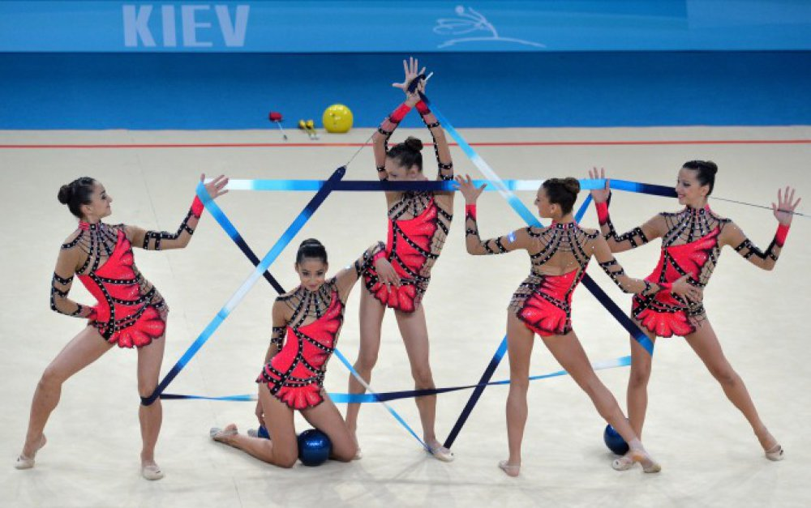

GINNASTICA RITMICA
La ginnastica ritmica è una disciplina della ginnastica e uno sport olimpico principalmente femminile, di squadra, individuale o a coppie.
Le ginnaste individuali possono decidere di partecipare principalmente a due tipi di gare: la specialità o il categoria.
Le ginnaste che partecipano al campionato di categoria devono sostenere quattro rotazioni (ossia eseguire quattro esercizi) con attrezzi differenti
tra fune, cerchio, palla, clavette e nastro stabiliti dalla federazione italiana a differenza delle ginnaste che decidono di partecipare al campionato
di specialità che hanno la possibilità di scegliere due attrezzi. La durata massima degli esercizi è per entrambi di 90 secondi di esecuzione per
esercizio. Per le squadre e per le coppie invece gli esercizi sono due, più lunghi, fino a 150 secondi; nella prima delle due prove le ginnaste hanno
tutte lo stesso attrezzo, mentre nella seconda vengono usati due tipi di attrezzi. Come per le individualiste, anche per le squadre le rotazioni degli
attrezzi sono stabilite dalla FIG (Federazione Internazionale Ginnastica).
